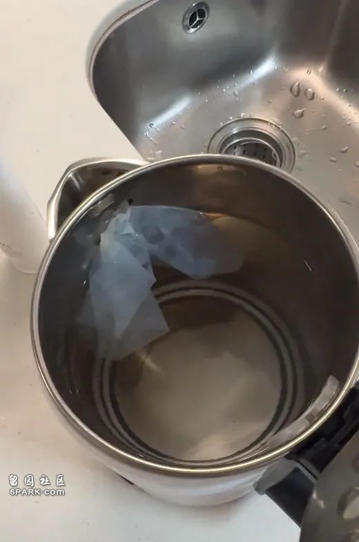

8月1日，浙江杭州，一男子发视频称，在用酒店用开水壶烧开水吃药时，发现开水壶口被堵住，打开后看见里面有一个避孕套。此事引发关注。
该男子发布的视频中，酒店桌子上放着两盒药，药盒旁是一个白色的烧水壶，其滤水口被乳白色半透明的物体堵住，视频定位地址是浙江杭州上城区的七忆品韵精选服务式公寓（杭州七堡花园城店）。
视频发布者称，他是来杭州工作的，因没有找到房子暂时住酒店。第一天住酒店时没有什么问题，第二天发现自己有点感冒，买了药后回酒店烧开水吃药。“开始的时候没注意看烧水壶里面有什么东西，吃第一盒药的时候一切都正常，到吃掉第二盒药时发现开水壶的壶嘴被堵住，打开发现里面有一个避孕套。”
“恶不恶心啊，我现在人都想反胃。”该男子称，此后他去找商家，商家没有说对不起，把这些责任都归于保洁阿姨身上，“然后就不了了之了”。
男子在视频配文称，“检查的费用花了873.19元，后面联系商家，想让他帮我分担一些，毕竟在他哪里住了两晚了，然后商家就直接消失……”

8月5日，潇湘晨报记者联系到涉事酒店的老板。据他描述，顾客反映问题后，酒店方没有推卸责任，承认了自己的错误，说是保洁阿姨卫生没有打扫到位。酒店方询问顾客想要怎么解决问题，提出退一天的房费，顾客说“我考虑一下吧”，直接回了房间。第二天晚上，顾客发消息，说检查花了800多元，要求报销，“检查单没有发给我，就是微信上发了一个，说去检查花了800多，要我给他报销一下。我觉得涉嫌敲诈，就没有再回复。”
“我做酒店也十多年了……卫生我也亲力亲为去检查了，我就十多个房间，转一圈也就花半个小时，洗衣机、冰箱、淋浴房、烧水壶也都会检查一遍。”酒店老板称，“（他）是一个人办登记办录入的……后面他退房的时候，我们阿姨去打扫卫生，我也去看了，它里面也有女孩子用的东西。我也不知道他是工作当中，生活当中是遇到什么困难，在加上我这边‘续不续住’催得很紧，可能说把这点火撒到我头上了……搞这个恶作剧啥的”。
他表示，目前涉事烧水壶已经扔掉，换成新的了，房客与酒店方暂时只通过订房平台进行了沟通。
8月5日，潇湘晨报记者私信是视频发布者，截至发稿未获得回应。
记者注意到，在订房软件上，视频发布者在酒店评论区进行了评论，反映烧水壶里有避孕套一事。商家进行了回复。
5日下午，视频发布者将商家回应截图发布在社交平台。回应显示为“对于您在酒店入住期间的经历，我们深表遗憾。懂的都懂，在这里不多说什么了，大家自己去领悟吧。”
视频发布者表示，商家说要免一天房费，他说不用，后来担心身体去检查，想让商家分担，有错吗？“清者自清。我刚去找商家的时候，他把过错全部推给酒店阿姨，跟我说出门在外生意不好做，让我这件事就这么算了……”